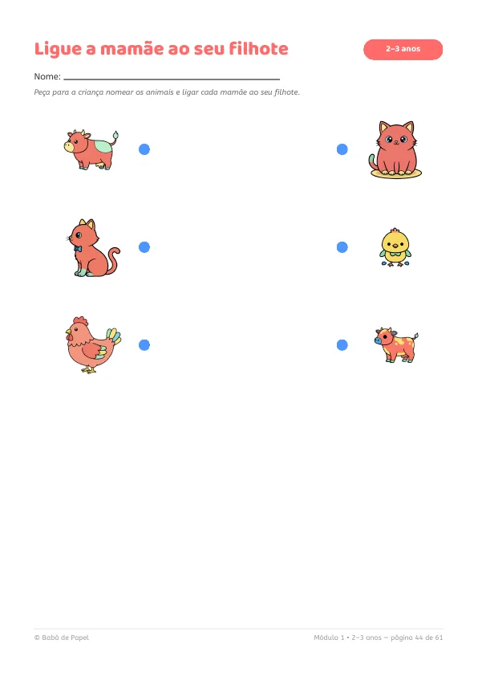
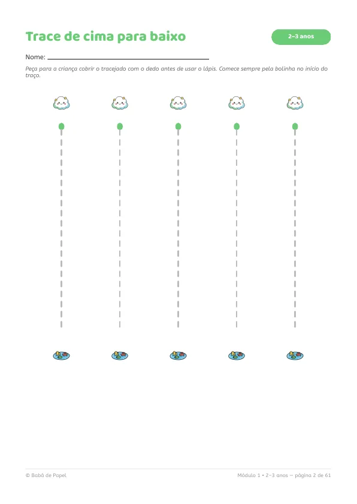
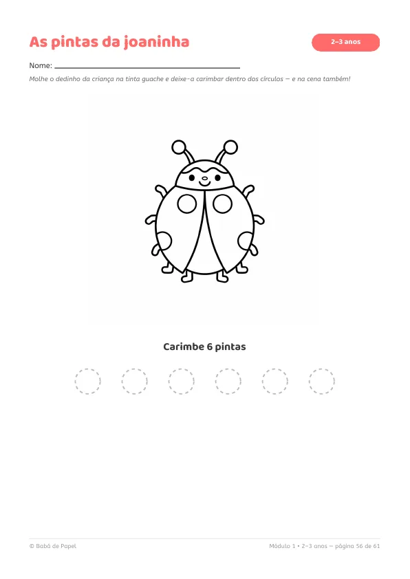

📘 Módulo 2 a 3 anos · Primeiros Traços60 atividades
Traçados, formas, cores, ligue a sombra, mamãe e filhote, recorte no tracejado e atividades de carimbo com o dedinho. Tudo pensado pra mãozinha que está começando.



páginas reais do módulo, sem retoque